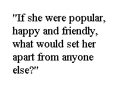
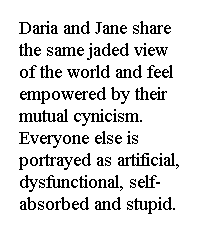

In the Media
In the Media
August 17-23, 1997 |
|
'Daria' : Brainy=Zany in MTV's irreverent view of 'girl humor' 'Daria' delivers a big dose of sophisticated humor They play frog baseball. They are obsessed with bodily functions and women's anatomy. They tie firecrackers to animals and urinate in pools - and admit it. Some call it stupid, some call it "boy humor," but it's what makes "Beavis and Butt-head" click. That same brand of irreverent humor has made a hit of "Daria," MTV's animated "girl humor' sitcom (9:30 PM Mondays) starring Beavis and Butt-head's only female friend. She is known to fans as the sardonic smart girl who hangs around the moronic misfits because she finds their stupidity mildly entertaining. "What separates 'Beavis and Butt-head' from 'Daria' is a lot of brain cells," says Abby Terkuhle, MTV's senior vice president and creative director. "When 'Beavis and Butt-head' became successful, we didn't want to repeat it. I think a lot of people would have said, 'let's do bimbo and boogerhead,' but we didn't want to go there. We created Daria's character because we wanted a smart female who could serve as the foil. We thought about it and decided that Daria was funny in her own right and worthy of her own series." Glen Eichler and Susie Lewis [Lynn] were part of the "Beavis and Butt-head" creative team. They created Daria as intelligent because it's unlikely that girls are going to watch another female act like Beavis and Butt-head.  Eichler and Lynn say Daria was named after a real girl who was nicknamed "diarrhea" by the rest of the class. "We thought it would be funny if Beavis and Butt-head not only knew a girl but that she was smart." says Eichler. "There was no point having Beavis and Butt-head hang out with a really stupid girl because then it would have been 'Beavis, Butt-head, and Butt-chick.' " Can the same fans who watch "Beavis and Butt-head" sustain a program like "Daria," which doesn't include animal cruelty, bathroom humor or minute-to-minute vulgarity? "Just as there is a place for two metalhead misfits like Beavis and Butt-head on MTV, I think there is a place for a smart, 16-year old girl like Daria who can see through the nonsense around her, take action on it and be a strong character. It's not just for girls because it tested well for guys. Will the hard-core 'Beavis and Butt-head' fans like 'Daria?' " If they do tune in, they will need to like smart, perceptive and honest, combined with a large dose of sarcastic which is often mistaken for haughty. Because of the above qualities, Daria Morgendorffer is unpopular. Uprooted from her digs in "Beavis & Butt-head," Daria now lives in a new town called Lawndale, and attends the enormous and progressive Lawndale High School where the other students and faculty regard her with a mixture of curiosity, confusion, and casual scorn. "We made her this way because otherwise she'd be Moesha," says Eichler. "If she were popular, happy and friendly, what would set her apart from anyone else?" In the series, Daria is very different from everyone else with the exception of her friend Jane Lane. Daria and Jane share  the same jaded view of the world and feel empowered by their mutual cynicism. Everyone else is portrayed as artificial, dysfunctional, self-absorbed and stupid. Although Daria would never admit it, she is jealous of her younger sister, Quinn, who is cute and popular but an airhead. Quinn's friend, Brittany, is the stereotypical cheerleader. Daria describes Brittany's boyfriend Kevin, the quarterback of the football team, as "too dumb to realize how dumb he is." "It's all part of this big defense mechanism Daria has because she is such a misfit in her world," says Lynn. "While Daria is laughing at the rest of the world and acting as though she is above all the other characters, she has put herself there as a defense from being rejected from them on a daily basis." The stories unfold through the eyes of Daria and adults take a beating. They are portrayed as half-witted, dull and pointless. Helen Morgendorffer, Daria's mom, is an attorney who is more serious about her career than parenting. She does the obligatory motherly duties but shows little compassion or love for her children. Daria's dad is portrayed as an imbecile who has a temper like a volcano and enough emotional baggage to start a one-man bonding group. Daria, however, seems unscathed by the dysfunction around her because she is blessed with an uncanny ability to turn potential disaster to her advantage. "I think of Daria's parents as real '90s parents," says Eichler. "They both have careers that they are excited about, but at the same time they feel they have to be the best parents they can be. But they are completely incapable of doing that. They mean well, but they are incompetent and Daria is on to that. She has a certain amount of affection for her parents, but since they are so distracted, it's easy for her to manipulate them. She enjoys torturing them, and that's her way of spending time with them." Despite MTV's creed never to be didactic with their audience, Daria's character could be a role model of sorts for teens who feel the same as she does. Perhaps seeing someone like Daria succeed through wisdom rather than looks will help kids feel less alone or alienated. "When you are in high school, you think all your peers are a certain way and you don't fit in," says Eichler. "It's not until you get older and you have some perspective do you realize that you allowed yourself to be terrorized and oppressed by the popular clique. If you had more self-confidence, you could have found friends and had a less-horrible experience." |